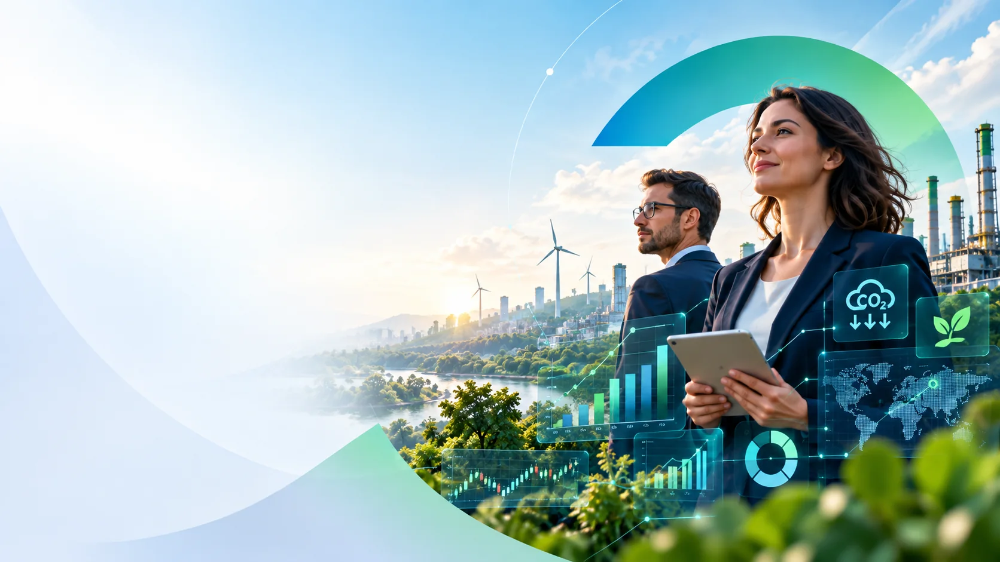
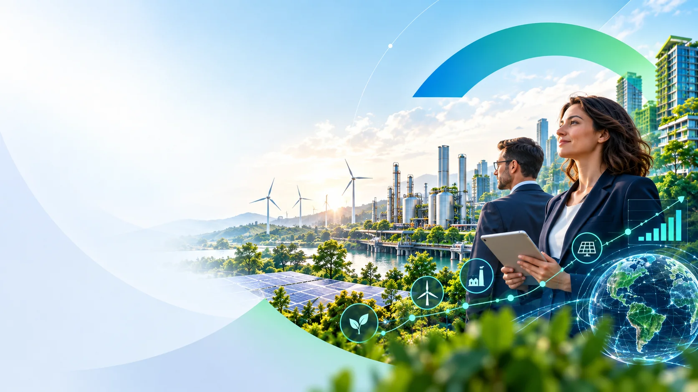
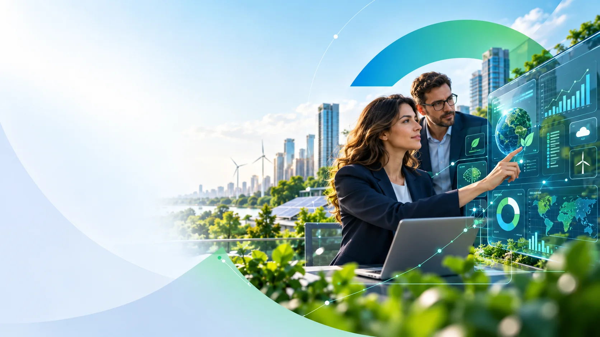

From regulation to implementation
Preview space for insights and trends. Approved historic news will be migrated from the source CMS/export.
A flexible knowledge hub for sustainability, regulation, climate and innovation.
KNOWLEDGE HUB
The historic news archive was not fully retrievable during migration review, so these are presentation placeholders only.

Preview space for insights and trends. Approved historic news will be migrated from the source CMS/export.
VISUAL SNAPSHOT


A content pattern for climate, carbon, reporting and sustainability knowledge.
A flexible editorial card for tools, innovation and forward-looking ESG topics.